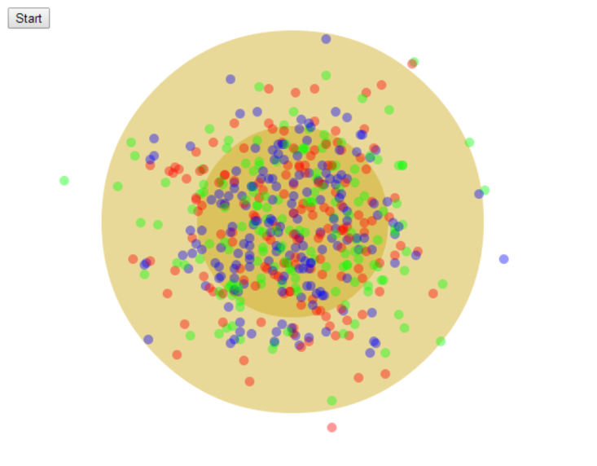
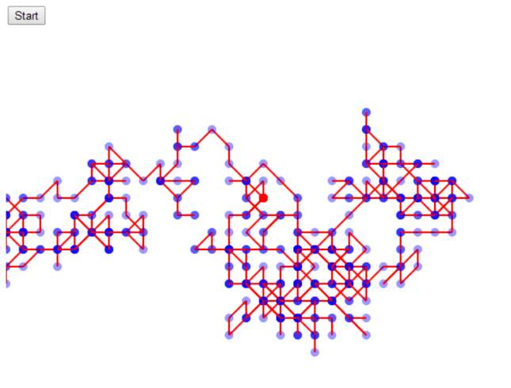
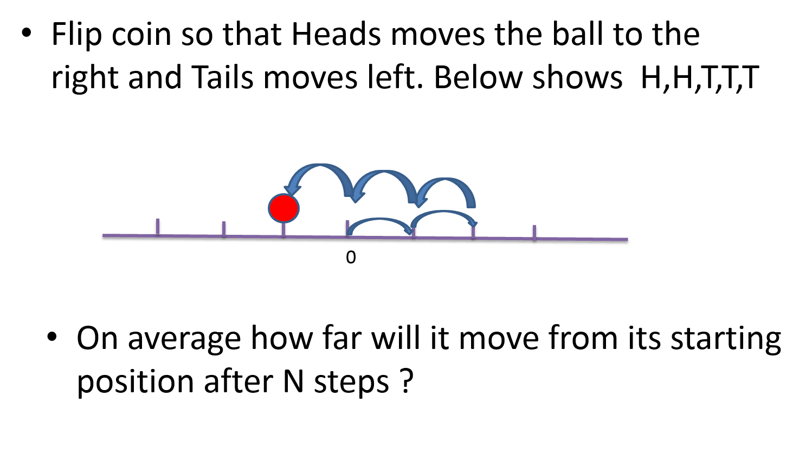
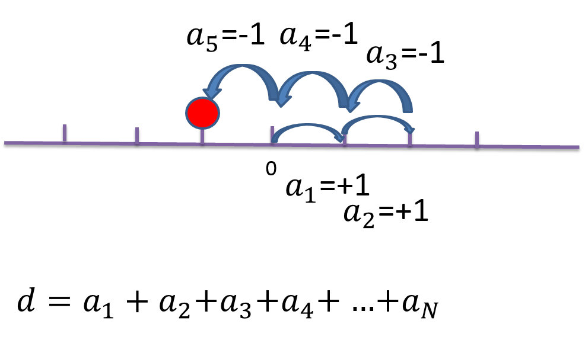

Random Walk
John R. Williams and Abel Sanchez

We will start with random walk of a single particle along a line.
Lets label each step as below and call the sum d.
Lets take the average values taken over many trials. We see that each term averages to zero.
Being a little smarter we see that we need to calculate the average square of the distance.
This gives us the root mean square value. It says that this will be the root of N where N is the number of steps.